Munich Rent Index
We will explore model checking methods using the Munich Rent Index data (rent99).
Variables:
rent: Net rent per month (in Euro)rentsqm：Net rent per month per square meter (in Euro)area: Living area in square metersyearc: Year of constructionlocation: Quality of location according to an expert assessment1= average location2= good location3= top location
district: District in Munich
gridExtra::grid.arrange(
ggplot(rent99)+geom_point(alpha=0.1)+
aes(x=area,y=rent)
,ggplot(rent99)+geom_point(alpha=0.1)+
aes(x=yearc,y=rent)
,ggplot(rent99)+geom_boxplot()+
aes(x=factor(district),y=rent)
,ggplot(rent99)+geom_boxplot()+
geom_jitter(alpha=0.1)+
aes(x=factor(location),y=rent)
,ncol=2
)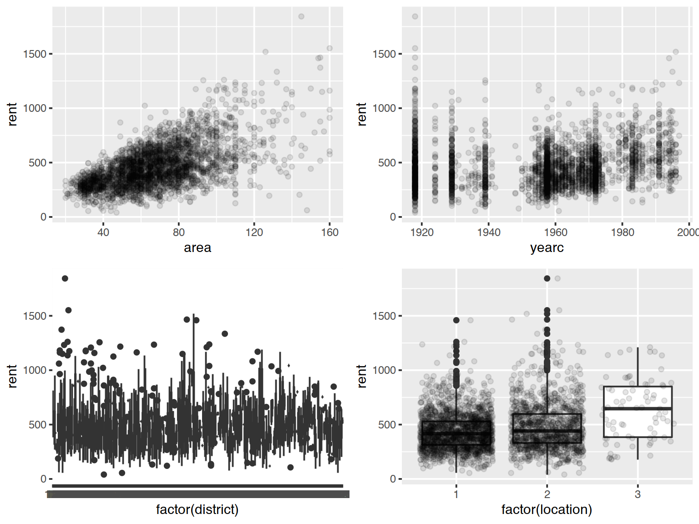
We fit a simple model without transformation:
regout <- lm(rent ~ yearc + area + district + factor(location), data=rent99)
summary(regout)##
## Call:
## lm(formula = rent ~ yearc + area + district + factor(location),
## data = rent99)
##
## Residuals:
## Min 1Q Median 3Q Max
## -748.59 -89.55 -8.89 82.58 1049.68
##
## Coefficients:
## Estimate Std. Error t value Pr(>|t|)
## (Intercept) -5.214e+03 2.517e+02 -20.717 < 2e-16 ***
## yearc 2.714e+00 1.284e-01 21.140 < 2e-16 ***
## area 5.248e+00 1.149e-01 45.656 < 2e-16 ***
## district -8.550e-03 4.341e-03 -1.969 0.049 *
## factor(location)2 4.321e+01 5.826e+00 7.418 1.53e-13 ***
## factor(location)3 1.336e+02 1.703e+01 7.848 5.77e-15 ***
## ---
## Signif. codes: 0 '***' 0.001 '**' 0.01 '*' 0.05 '.' 0.1 ' ' 1
##
## Residual standard error: 146.5 on 3076 degrees of freedom
## Multiple R-squared: 0.44, Adjusted R-squared: 0.4391
## F-statistic: 483.5 on 5 and 3076 DF, p-value: < 2.2e-16Assumptions of regression
When fitting a regression model, here are list of things to keep in mind:
- Validity
- Does the data map to the research question?
- the model capture the comparison of interest?
- Additivity and Linearity
- Is \(\mathbf{X}\boldsymbol{\beta}\) enough to explain the data?
- Is there transformation that we can apply?
- Independence of errors
- Are there extra structures in the data that we need to model?
- \(\Rightarrow\) generalized least squares.
- Equal variance of errors
- Does not affect the deterministic part of the model.
- \(\Rightarrow\) weighted least squares.
- Outliers and unusual observations
- How much of the result is due to these unusual observations?
- What is the cost/benefit of removing them versus keeping them.
- Normality of errors
- Heavier tails, skewness, etc that affect the model fit.
- QQ-plot of the residuals
Residuals
- Whenever you fit a model, You should ALWAYS check the residuals. You might not show them to other people and most certainly not in the final product, nevertheless, they will save you from making mistakes that will cost you your career.
Residuals are never shown to you because if they are worth showing, the model needs to be improved and if the model is good enough there is nothing to show in the residual. But that means looking at the residual is your responsibility as a statistician.
- For a linear regression model with \(p\) predictors including the intercept \[\mathbf{y}= \mathbf{X}\boldsymbol{\beta} +\boldsymbol{\epsilon}\]
- The error and the residual are defined as \[\boldsymbol{\epsilon}=\mathbf{y}-\mathbf{X}\boldsymbol{\beta} \mbox { and } \hat{\boldsymbol{\epsilon}}=\mathbf{y}-\hat{\mathbf{y}}=\mathbf{y}-\mathbf{X}\hat{\boldsymbol{\beta}}\]
- By assumption the errors are iid \(N(0,\sigma^2)\) therefore, \[ \boldsymbol{\epsilon} \sim N(\mathbf{0}, \sigma^2\mathbf{I})\]
- We also saw in the bootcamp that \[\hat{\boldsymbol{\epsilon}}\sim N(\mathbf{0},\sigma^2(\mathbf{I}-\mathbf{H}))\]
Therefore the errors \(\boldsymbol{\epsilon}\) are uncorrelated by assumption but the residual \(\hat{\boldsymbol{\epsilon}}\) may be correlated and that amount of correlation is defined by \(\mathbf{I}-\mathbf{H}\).
Standardized Residuals
- Standardized residual (
rstandard) \[\hat{\epsilon}_i^{'}= \frac{\hat{\epsilon}_i}{\sqrt{\hat{\sigma}^2(1-h_{ii})}}\] where \(h_{ii}\) is the \(i\)th diagonal of the hat matrix \(\mathbf{H}\).
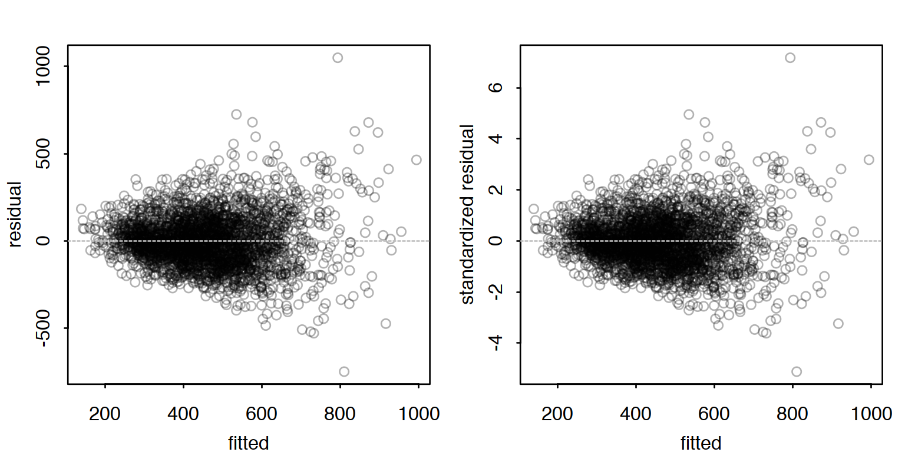
Studentized Residuals
- Note that \(\hat{\sigma}^2=\sum_{i=1}^n \hat{\epsilon}_i /(n-p)\).
- Studentized residual (
rstudent) \[\hat{\epsilon}_{i}^{\star}= \frac{\hat{\epsilon}_i}{\sqrt{\hat{\sigma}_{(-i)}^2(1-h_{ii})}}\] where \(\hat{\sigma}_{(-i)}^2=\sum_{j\neq i} \hat{\epsilon}_j /((n-1)-p)\)
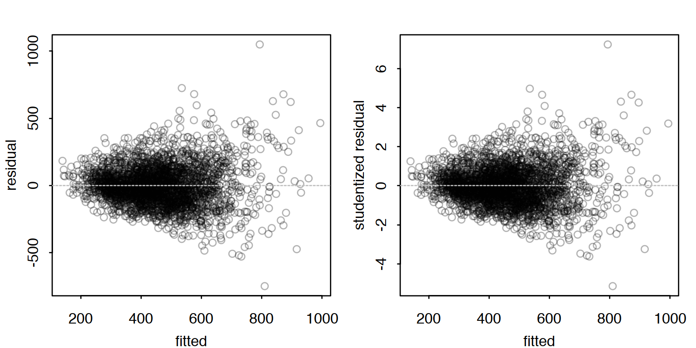
regout <- lm(rent ~ yearc + area + district + factor(location), data=rent99) Pearson residual (car::residualPlots)
If we have known weights, as we will see shortly, \[\hat{\boldsymbol{\epsilon}}^p_i=\sqrt{w_i}\hat{\boldsymbol{\epsilon}}\]
The residual is special case of a Pearson residual \[\hat{\boldsymbol{\epsilon}}=\mathbf{y}-\hat{\mathbf{y}}\]
residualPlots from car package provide another way to plot the residual.
residualPlots(regout, terms= ~ 1, fitted=TRUE)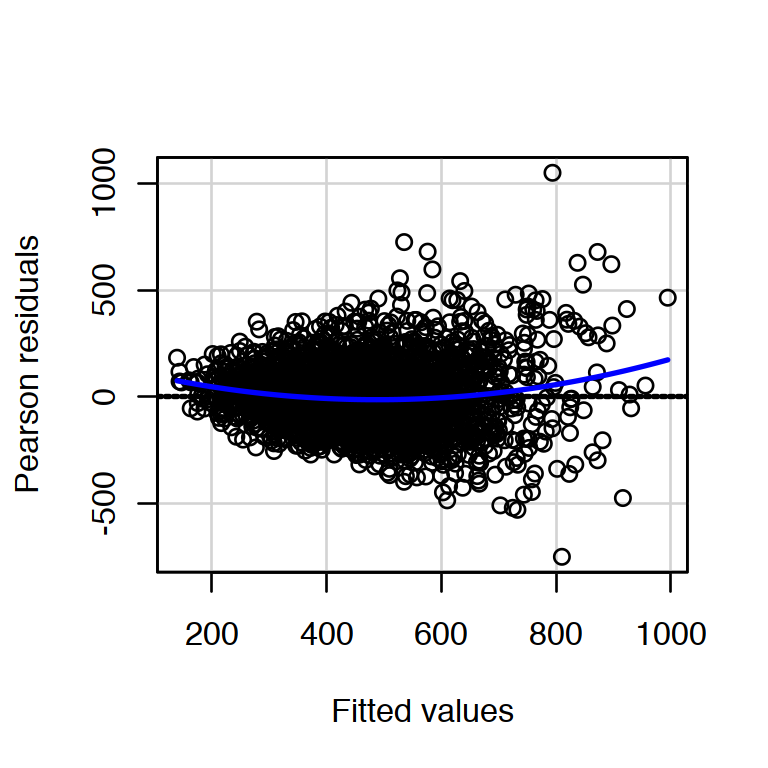
## Test stat Pr(>|Test stat|)
## Tukey test 6.9431 3.835e-12 ***
## ---
## Signif. codes: 0 '***' 0.001 '**' 0.01 '*' 0.05 '.' 0.1 ' ' 1Joint influence
There are some useful diagnostics plots that you can use to assess the overall fit of the model.
Marginal Model Plot (car::marginalModelPlots)
Marginal model plot shows the fit of the data marginally for each predictor variable. It is constructed by plotting the dependent variable on each vertical axis and each independent variable on a horizontal axis. There is one marginal model plot for each independent variable and one additional plot that displays the predicted values on the horizontal axis. Each plot contains a scatter plot of the two variables, a smooth fit function for the variables in the plot (labeled “Data”), and a function that displays the predicted values as a function of the horizontal axis variable (labeled “Model”). The discrepancy between the two lines indicates locations where the model is not fitting the observed data. However, there is a possibility that the smoother is not fitting the data well in which case you want to be careful not to overfit.
marginalModelPlots(regout,col=rgb(0,0,0,alpha=0.3),col.line = c("green","red"))## Warning in mmps(...): Interactions and/or factors skipped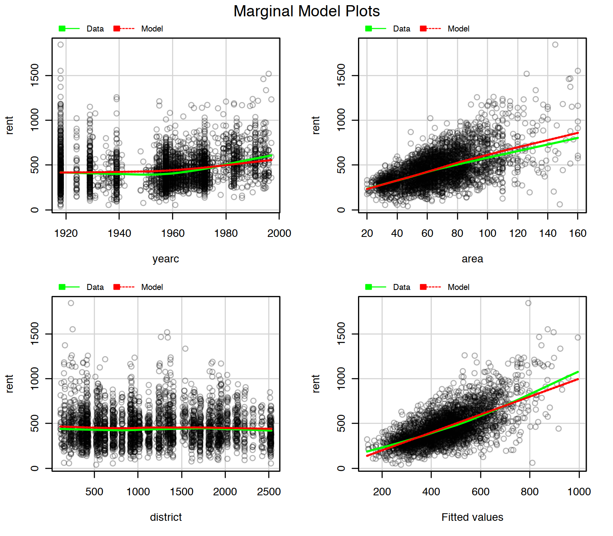
Added variable plots (car::avPlots)
avPlots function construct added-variable plots or the partial-regression plots for linear and generalized linear models. Added variable plots are constructed by plotting \(\mathbf{y}^r_i\) versus \(\mathbf{X}^r_i\) where \(\mathbf{y}^r_i\) is the residual of regressing all the predictor except for the \(i\)th on \(\mathbf{y}\) and \(\mathbf{X}^r_i\) is the residual of regressing all the predictor except for the \(i\)th on \(\mathbf{X}_i\).
It has several nice features that are useful in looking at the marginal effect of the predictors. 1. The least squares linear fit to this plot has the same slope as the original model and intercept zero. 2. The residuals from the least squares linear fit to this plot are identical to the residuals from the least squares fit of the original model. 3. The influences of individual data values on the estimation of a coefficient are easy to see in this plot. 4. It is easy to see many kinds of failures of the model or violations of the underlying assumptions (nonlinearity, heteroscedasticity, unusual patterns).
avPlots(regout, id.n=0, id.cex=0.6)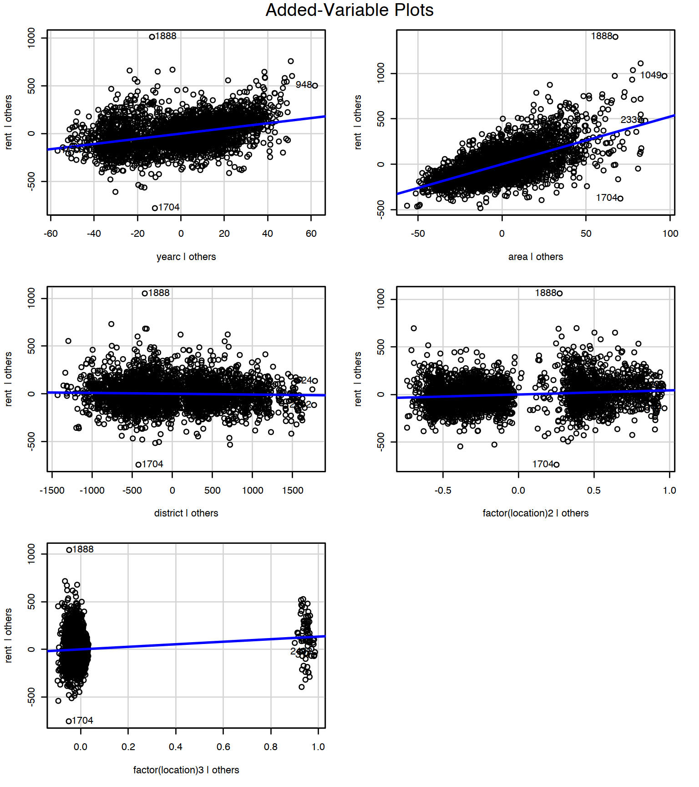
Detecting the Unusual Data
Defining unusual data is not trivial. It depends on how badly does the “substantial” result get affected by it.
- Is the unusual data one time error?
- Or is it something that would come up repeatedly.
- Is the “unusual”ness comes from our prior assumption and this is how data always looks?
- NASA Nimbus 7 satellite was discarding Antarctic ozone hole data because it was unusual.
Here is a plot of reported weight versus the actual weight. It’s most likely an recording error that we can discard. However if the model is fitted without realizing its existence, the resulting model can be severely biased.
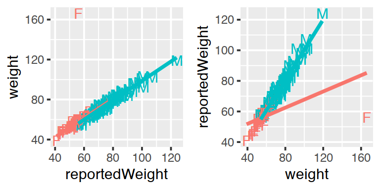 But we should also note that the degree to which this problematic observation causes is different depending on the way it deviates.
Leverage and influence
- Influential points are observations that have large influence on the resulting model.
- The degree of influence is determined by both the leverage and the discrepancy. \[ \mbox{Influence} = \mbox{Leverage} \times \mbox{Discrepancy}\]
- Leverage can be thought of as were the points are and
- Discrepancy can be though of as how much they deviate

resourse: “http://omaymas.github.io/InfluenceAnalysis/”
Hat values
- Recall the hat matrix \(\mathbf{H}=\mathbf{X}(\mathbf{X}^{T}\mathbf{X})^{-1}\mathbf{X}^{T}\).
- The \(i,j\)th entry in the hatmatrix \(h_{ij}\) captures the contribution of observation \(y_i\) to the fitted value \(\hat{y}_j\).
Since \(\hat{y}_i=\sum_{j=1}^{n}h_{ij}y_{j}\) and \(y_i\) and \(y_j\) are uncorrelated \(cor(y_i, \hat{y}_i)=\sqrt{h_{ii}}\).
\(i\)th diagonal of the hat matrix \(\mathbf{H}\), \(h_{ii}\) or \(h_{i}\) is the hat value for the \(i\)th observation.
- In simple regression it measures the distance from the mean of \(x\). \[h_{ii}=\frac{1}{n}+\frac{(x_i-\bar{x})^2}{\sum_{j=1}^n(x_j-\bar{x})^2}\]
- In multiple regression it measures the distance from the centroid of \(\mathbf{X}\)
- It summarizes the potential influence of \(y_i\) on all the fitted values.
Hat values are between \(1/n < h_{ii}< 1\) and the average is \(\bar{h}=p/n\).
Hat values: Duncan’s Data on the Prestige of U.S. Occupations
- type: Type of occupation: prof, professional and managerial; wc, white-collar; bc, blue- collar.
- income: Percent of males in occupation earning $3500 or more in 1950.
- education: Percent of males in occupation in 1950 who were high-school graduates.
- prestige: Percent of raters in NORC study rating occupation as excellent or good in prestige.
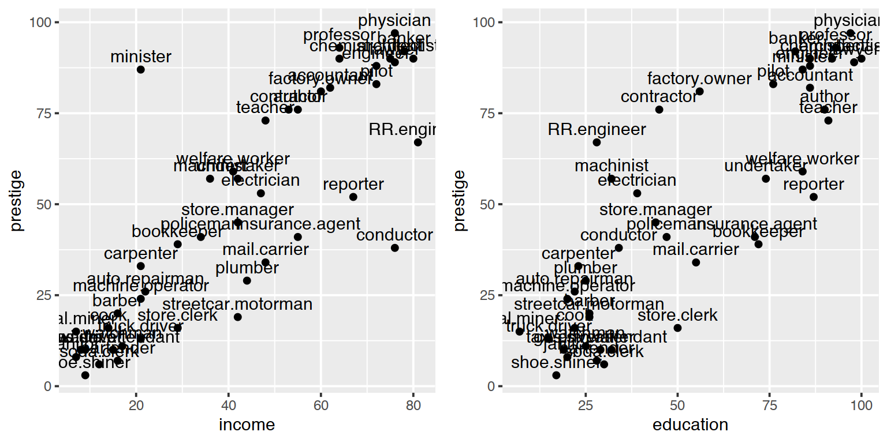
## Warning: Removed 1 rows containing missing values (geom_path).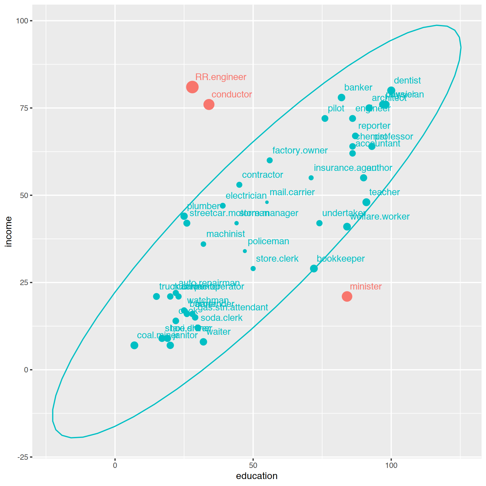
Bonferroni Outlier Test
There are tests for outliers.
mod.duncan <- lm(prestige ~ income + education, data=Duncan)
outlierTest(mod.duncan)## No Studentized residuals with Bonferonni p < 0.05
## Largest |rstudent|:
## rstudent unadjusted p-value Bonferonni p
## minister 3.134519 0.0031772 0.14297Influence on regression coefficient
- Let \(\hat{\beta}_j\) be least squares coefficient calculate on all the data.
\(\hat{\beta}_{j(-i)}\) is the same coefficient calculated on data without \(i\)th observation.
\(DFBETA_ij\) (
dfbeta) \[ D_{ij}=\hat{\beta}_j-\hat{\beta}_{j(-i)}\]\(DFBETAS_ij\) (
dfbetas) \[ D_{ij}^{\star}=\frac{\hat{\beta}_j-\hat{\beta}_{j(-i)}}{Se_{(-i)}(\hat{\beta}_j)}\]Problem with these statistics is that there are many of them \(np\).
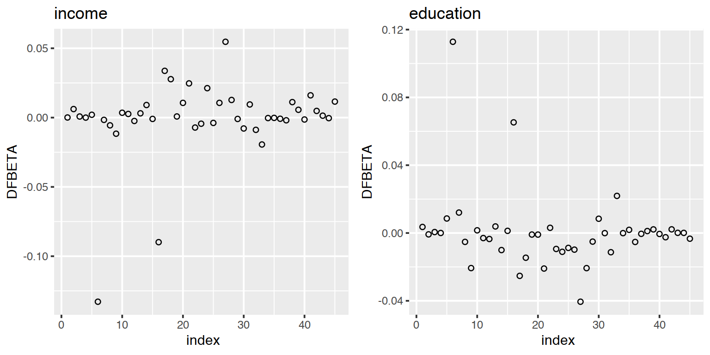
Cook’s distance (cooks.distance)
Cook’s idea was to measure the distance between \(\mathbf{\hat{\beta}}\) and \(\mathbf{\hat{\beta}}_{(-i)}\). \[D_i =\frac{(\mathbf{\hat{\beta}}-\mathbf{\hat{\beta}}_{(-i)})'\mathbf{X}^{'}\mathbf{X}(\mathbf{\hat{\beta}}-\mathbf{\hat{\beta}}_{(-i)})}{p s^2}\]
- It turns out that you can re-express Cook’s distance as \[ D_i=\frac{(\hat{\epsilon}_i^{'})^2}{p}\frac{h_i}{1-h_i}\]
- First terms is the measure of discrepancy
Second term is the measure of leverage
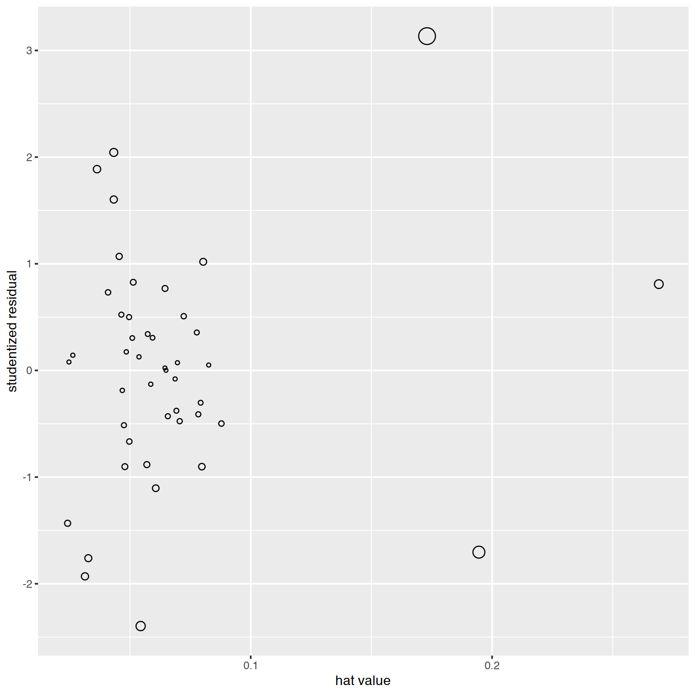
\(DEFITS_i\) (dffits)
- Similar measure is \(DEFITS\), which uses studentized residual.
\[DEFITS_i= \hat{\epsilon}_{i}^{\star}\sqrt{\frac{h_{i}}{1-h_{i}}}\]
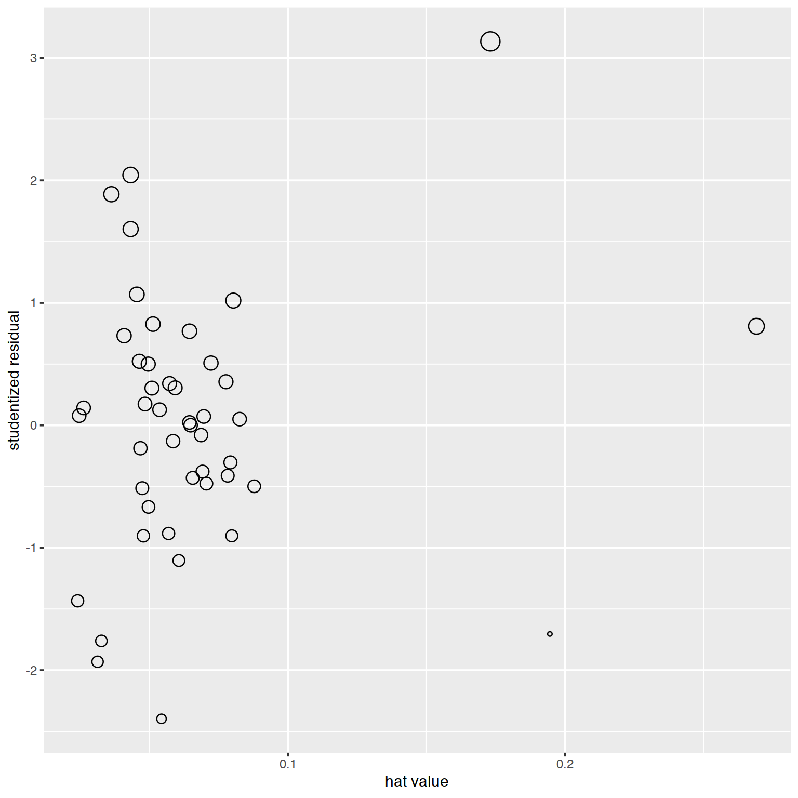
Influence Index Plot (car::influenceIndexPlot)
Provides index plots of Cook’s distances, leverages, Studentized residuals, and outlier significance levels for a regression object.
par (mar=c(3,3,2,1), mgp=c(2,.7,0), tck=-.01)
influenceIndexPlot(mod.duncan, id.n=5)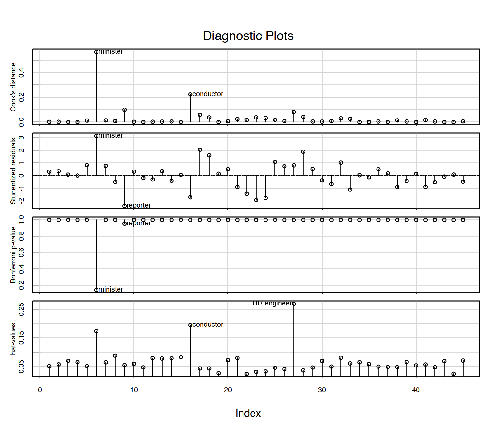
Influence plot (car::influencePlot)
This function creates a bubble of studentized residuals by hat values, with the areas of the circles representing the observations proportional to Cook’s distances. Vertical reference lines are drawn at twice and three times the average hat value, horizontal reference lines at -2, 0, and 2 on the Studentized-residual scale.
par (mar=c(3,3,2,1), mgp=c(2,.7,0), tck=-.01)
influencePlot(mod.duncan, id.n=5)Normality of residuals
Deviation from normality of the residuals is not critical in estimating the main effect as long as the errors are symmetric. However, it is an indication that some assumptions may be violated, which might require additional modeling effort for accuracy in the inference.
QQ plot: compares residual against theoretical normal quantity.
Here are examples of what a qqplot looks like under different shapes of distribution. 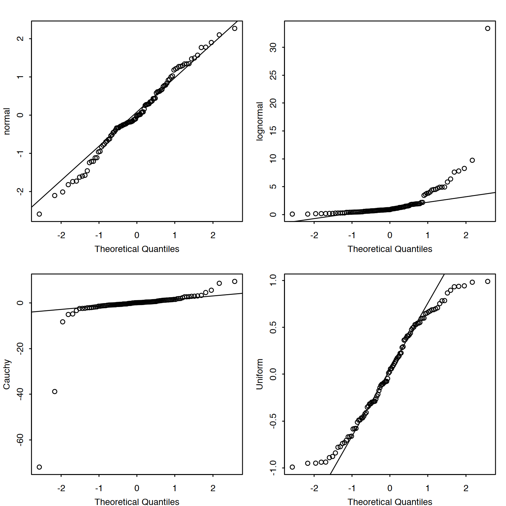 On the upper left corner is what a qqplot will look like if the distribution or the errors are normal. Upper right is a situation where there is heavy right skewness. Notice that the points are above the line that indicates heavyness of the tails relative to what you would expect under normal distribution.
curve(dnorm(x),from=-5,to=5,col="blue",ylim=c(0,0.7))
curve(dlnorm(x),from=-5,to=5,add=TRUE,col="red")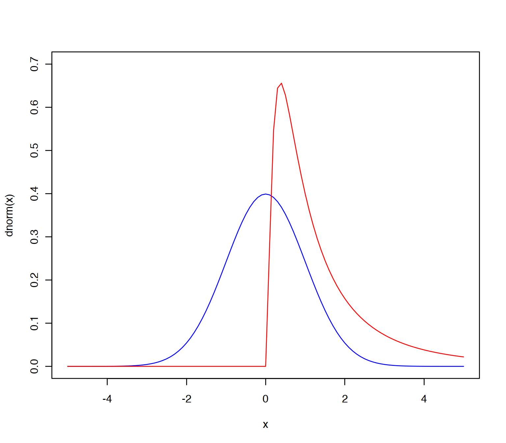
- On the lower left we have a symmetric heavy tailed distribution. The heavy tailed ness on the right is depicted by the points going above the line and on the left it is also shown by points below the line.
curve(dnorm(x),from=-5,to=5,col="blue")
curve(dcauchy(x),from=-5,to=5,add=TRUE,col="red")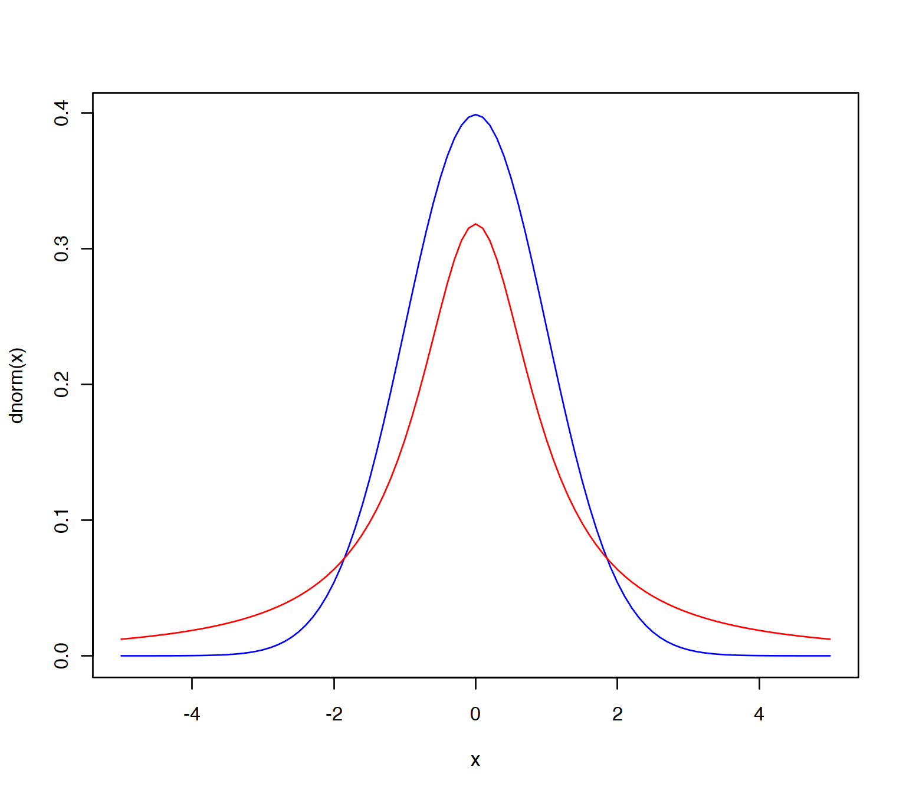
- Finally, the lower right figure shows a uniform distribution that shows light tailed distribution. Notice that the tail behavior is opposite of what you would see under heavy tailed distribution.
curve(dnorm(x),from=-5,to=5,col="blue",ylim=c(0,0.5))
curve(dunif(x,-1,1),from=-5,to=5,add=TRUE,col="red")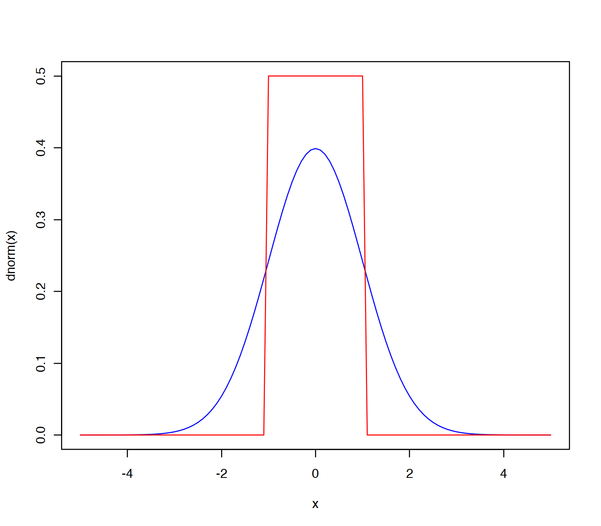
Shapiro-Wilk test
Shapiro-Wilk test implemented in R as shapiro.test() is a popular test for the normality. The null hypothesis is that the residuals are normally distributed. Small p-value is often used as an evidence against normality.
n <- 100
x <- rnorm(n); shapiro.test(x)##
## Shapiro-Wilk normality test
##
## data: x
## W = 0.98514, p-value = 0.3248x <- exp(rnorm(n)); shapiro.test(x)##
## Shapiro-Wilk normality test
##
## data: x
## W = 0.80477, p-value = 3.478e-10x <- rcauchy(n); shapiro.test(x)##
## Shapiro-Wilk normality test
##
## data: x
## W = 0.10776, p-value < 2.2e-16x <- runif(n,-1,1); shapiro.test(x)##
## Shapiro-Wilk normality test
##
## data: x
## W = 0.94473, p-value = 0.0003791Detecting heteroscedasticity
From P186: In most cases, heteroscedasticity is diagnosed with exploratory techniques, while substantial scientific theory regarding the type and magnitude of heteroscedasticity almost never exists. This is the reason why we face even more uncertainty when modeling error variances in a linear model than when modeling expectations. The validity of statistical tests is extremely dependent on the correctness of models. The Breusch-Pagan test assumes, for example, multiplicative variances with exactly defined covariates. The number of covariates in the variance expression determines the distribution of the test statistic. Hence, tests on heteroscedasticity should be seen as a (heuristic) exploratory tool, similar to residual plots. These tests should by no means be the only device to diagnose heteroscedasticity. Yet, this is suggested by most econometric textbooks, in which a battery of heteroscedasticity tests are described, while rarely is there a mention of residual plots. Residual plots should always be part of heteroscedasticity analysis, since they are in many cases the only tool to detect the specific type of heteroscedasticity or to determine which of the covariates influence the error variances.
Residual plot
par(mfrow=c(1,2))
par (mar=c(3,3,2,1), mgp=c(2,.7,0), tck=-.01)
plot(fitted(regout),resid(regout)); abline(h=0,lty=2,col="grey",main="fitted vs residual")
rs<-rstudent(regout)
plot(fitted(regout),rs); abline(h=0,lty=2,col="grey",main="fitted vs studentized residual")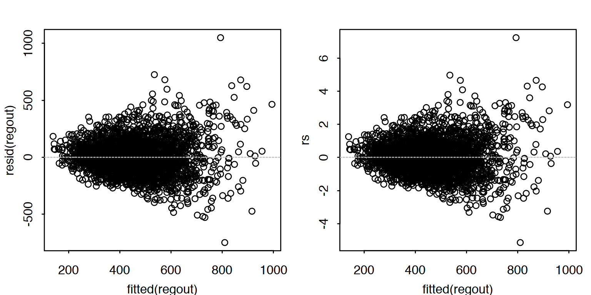
Breusch–Pagan Test for heteroscedasticity
bptest(regout)##
## studentized Breusch-Pagan test
##
## data: regout
## BP = 463.99, df = 5, p-value < 2.2e-16Spread-Level Plots
spreadLevelPlot(regout)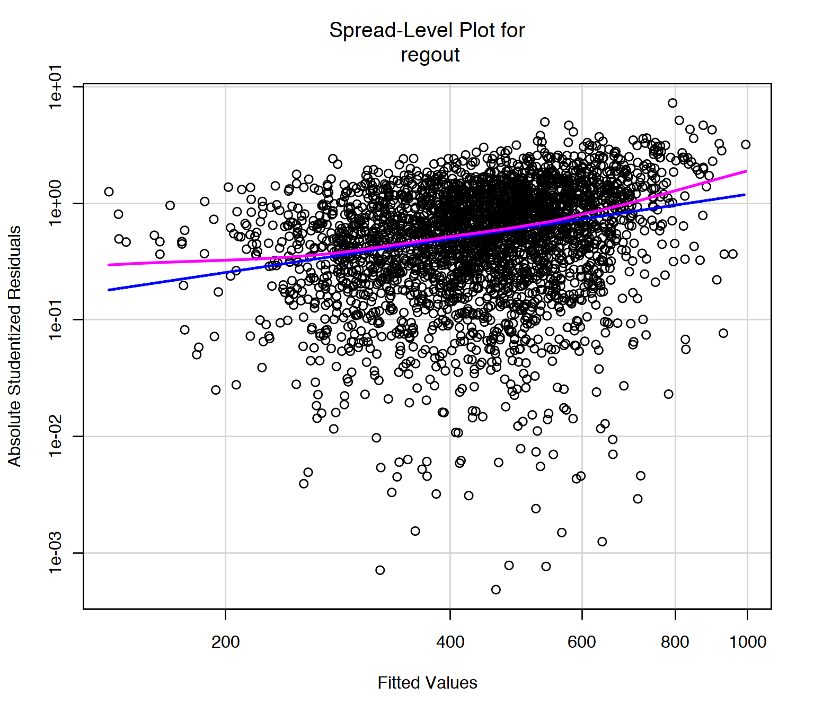
##
## Suggested power transformation: 0.04044848